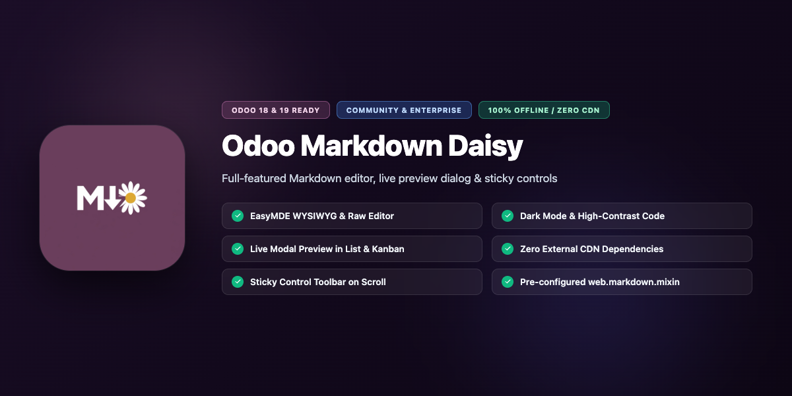
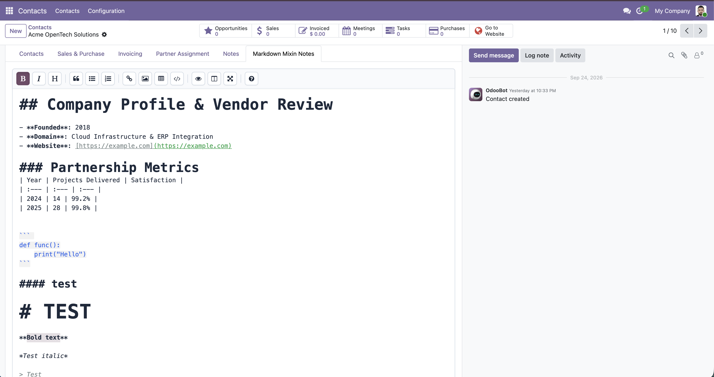
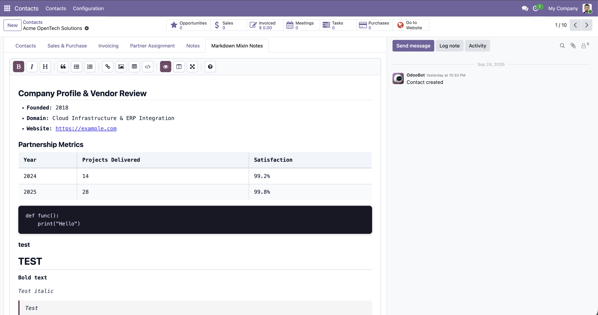
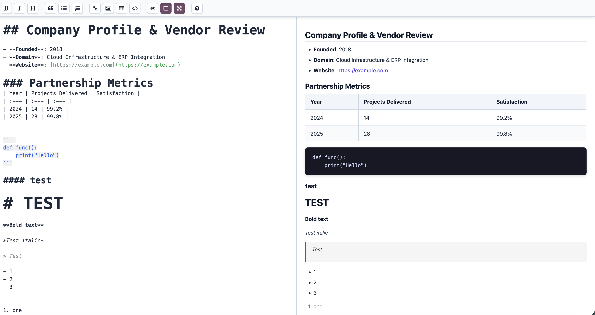
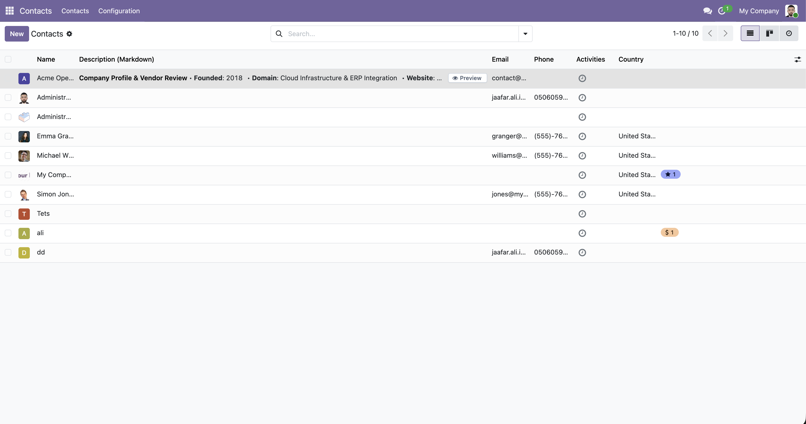
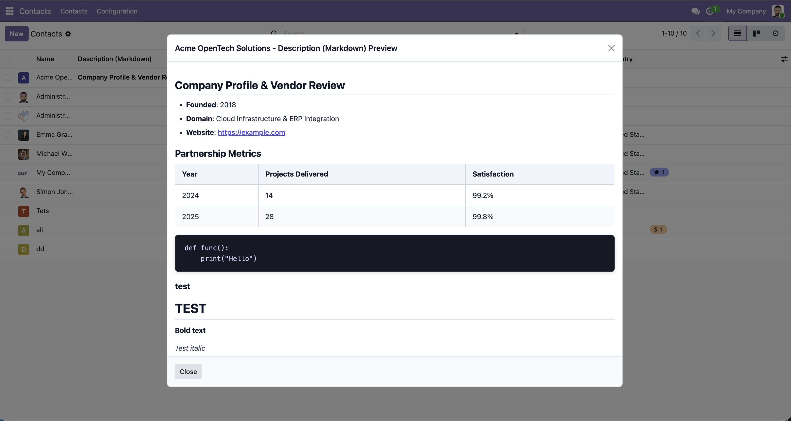
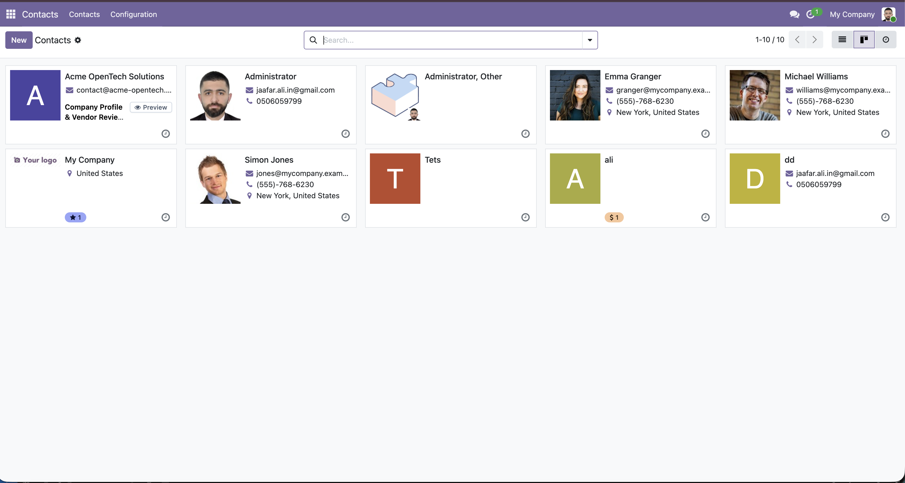

A modern, production-grade Markdown editor and preview viewer built with OWL 2 for Odoo 18 and 19. Part of the Daisy ecosystem.
Designed for smooth user experience, readability, and rock-solid reliability.
Rich formatting bar with headers, bold, italics, blockquotes, ordered/unordered lists, markdown tables, and code formatting.
Control buttons stay pinned at the top when scrolling down long content with zero-gap docking below Odoo's control panel.
Clean truncated inline previews in list and kanban views with a dedicated "Preview" button that opens the full formatted markdown in a popup modal.
Full Odoo dark mode compatibility with WCAG AAA compliant code block styling and syntax readability (10.9:1 contrast ratio).
All third-party libraries (EasyMDE, marked.js) are completely bundled locally inside the module. No internet access or external tracking required.
Inherit web.markdown.mixin in your Python models to instantly add standardized description_md fields without boilerplate.
Intuitive editing, rich rendered presentation, and live split-screen preview.






Add the markdown widget to any Text or Html field with a single XML attribute:
<!-- Form View: Add widget="daisy_markdown" (or "markdown") to any Text or Html field --> <field name="description" widget="daisy_markdown" placeholder="Type markdown here..."/>
<!-- List/Tree View --> <field name="description" widget="daisy_markdown_preview"/> <!-- Kanban View Card --> <field name="description" widget="daisy_markdown_preview"/>
from odoo import models, fields
class ProjectTask(models.Model):
_inherit = ['project.task', 'web.markdown.mixin']
# Inherits description_md automatically, or define custom fields:
custom_notes = fields.Text(string="Markdown Notes")
Developed by Jaafar Ali (jaafar.ali.in@gmail.com).
Report issues, contribute improvements, or suggest enhancements on GitHub:
github.com/jeffdali/odoo_markdown_daisy
License: GNU Lesser General Public License v3 (LGPL-3)